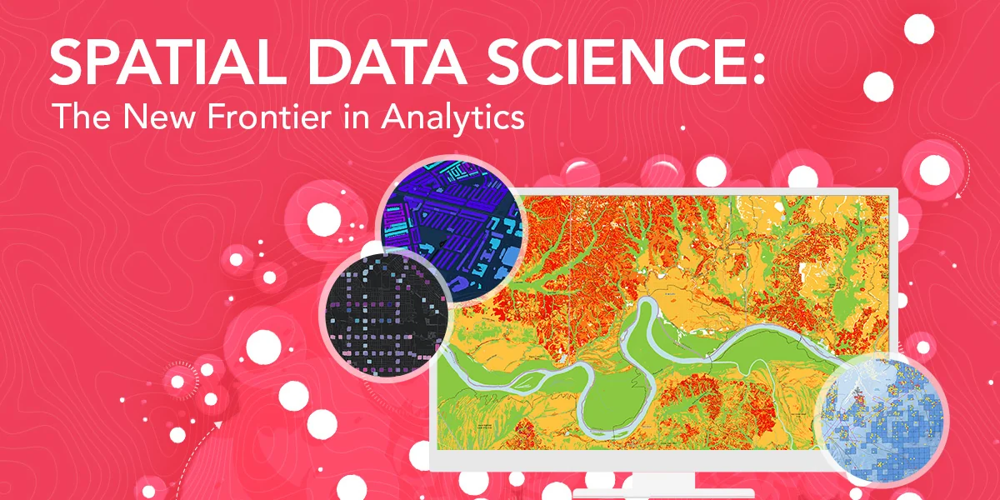

GIS • Remote Sensing • Spatial Planning
People
Places
Data
Better decisions
Leveraging GIS, remote sensing and spatial analysis to transform geographic data into actionable insights for environmental management and spatial planning.
Master's student in Geographic Information System and Spatial Planning
Focus on spatial data acqusiition, programmng,spatial databases, GIS, Spatial analysis and risk mapping
Academic and project experience in spatial data analysis and mapping.
Work with ArcGIS, SNAP, PostgreSQL, Python, remote sensing data and geospatial data management.
GIS & spatial analysis, remote sensing, environmental modelling, cartography and spatial planning.
From data collection to data management, manipulation and analysis, Maps and communication of results.
Completed Esri's six-week MOOC, developing practical skills in spatial data engineering, predictive modelling, machine learning, deep learning and space-time analysis using ArcGIS, with visualisation and communication through ArcGIS StoryMaps.
Esri Academy | 2026
View Certificate
University of Porto, Portugal
September 2025 – Present
University of Dhaka, Bangladesh
December 2023 – June 2024
Federal University of Technology Akure, Nigeria
February 2014 – November 2018
Open Mapping Hub, Asia-Pacific, Philippines
November 2023 – December 2024
Department of Disaster Science and Climate Resilience, University of Dhaka
May 2023 – January 2024
Christ Anglican School, Ibadan, Nigeria
N-POWER Empowerment Program
June 2021 – October 2022
Federal University of Technology Owerri, Nigeria
April 2019 – March 2020
Polaris Digitech Nigeria Limited, CMD Ikeja, Lagos State, Nigeria
October 2018 – March 2019